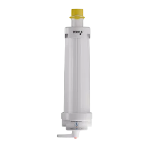

Softener

Backwashable Water Softener
A self-cleaning softener that backwashes its resin bed automatically, clearing out trapped sediment so performance stays consistent without manual intervention. Suited to independent houses and villas on borewell supply.